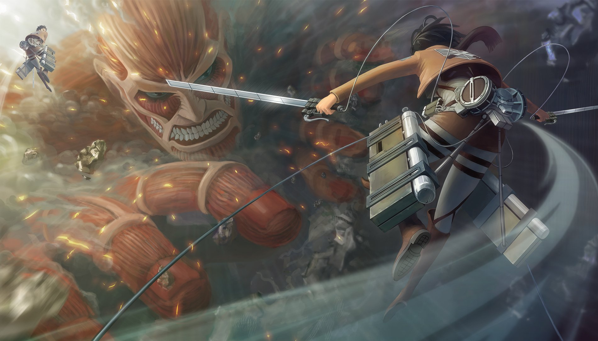

I would recommend Code Geass. I consider this anime as a masterpiece. Code Geass is a unique anime that has a complex and intriguing plot.
The main character, Lelouch, is one of the best protagonists that I have seen over my years of watching anime. His charisma, personality, and attitude
are intriguing and complex. The emotions and character development in this anime is insane.
Adventure
I would recommend Dororo. This anime had an amazing storyline. It has a dark but intriguing plot and it drags the viewer into loving characters and hating
certain ones. The character development was smooth and allows you to stand in the shoes of the characters and see why they would act a certain way. The animation
and music was clean and beautiful. Definitely one of my favorites as well.
Comedy
I would recommend Wotakoi: Love is Hard for Otaku. It is a simple, funny, and cute anime series. It has a decent plot and is one of my comfort animes.
Wotakoi is a chill anime that one can watch or rewatch to calm themselves after going through a long day. The characters are quite likeable and the intro
is addicting to listen to.
Drama
I would recommend Charlotte. The anime has good character development throughout the series. The design and artstyle of the anime is really pretty.
The plot is interesting and a bit melancholic. The music of the anime is really pleasant. I believe the anime was rushed in the last couple of episodes,
but overall, it is still enjoyable and a great anime to watch.
Slice of Life
I would recommend Miss Kobayashi’s Dragon Maid. This anime is really wholesome and comforting. It is one of those animes that I never get tired of watching.
It has a funny, cute, balanced, and relaxing plot. It is never dull and each character is lovable. I laughed quite a lot while I was watching this anime. Lastly,
I cannot forget to mention the amazing voice acting that was done by the voice actors.
Fantasy

I would recommend Attack of Titan. This anime is a bit gory but the plot is intriguing and quite interesting. The artstyle and visuals are insane. The anime is great,
and deserves to be called one of the best out there. The development, designs, dialogue, surprises, and twists of each character is really good and makes you want more.
The music and soundtracks of the anime are so addicting to listen to as well since they make you feel really hyped.
Magic
I would recommend Mahouka Koukou no Rettousei. I love the amazing soundtrack of the anime. The artstyle is quite unique. The characters are well drawn and the action
is well animated. It showed the scientific side to magic, with captivating fight scenes, and a good story line that never gets boring. A combination of action, romance,
and comedy, strengthened by a theme of competition and self-development. It made my heart beat with excitement since I never knew what the next episode could entail.
Supernatural
I would recommend Death Note. It is one of the best animes of all time, no doubt. The characters, the storyline, the amazing soundtrack, the intriguing and never before
seen plot, the smartness and sharpness of the mind of characters and many more, everything was molded into perfection in this anime. It was beautifully made and beautifully
detailed. I could not stop watching this anime that I finished it in just 2 days which is quite a feat considering how long it is.
Horror
I would recommend Another. This is an excellent anime! The story is filled with twists & turns which makes the plot more & more interesting each episode. Seeing great character
development executed in such a short span of time is truly impressive. The aura of each episode is filled with eeriness, suspense, and an uncertain feeling of dread. A mild warning
for weak-hearted people, this anime contains gruesome deaths and gory scenes.
Mystery
I would recommend Death Parade. It has such an amazing concept and plot. It breaks the stereotype of psychological thrillers being about murderous or mentally powerful characters
quite well. The artstyle, characters, and how it deals with how humans act in extreme situations, that would be difficult to deal with, is very well done. Decim is a very well written
main lead due to this. Every episode has allusions and untrammeled depth to it, and has you questioning everything.
Psychological
I would recommend Classroom of the Elite. It is an anime that targets students all around the globe and has very good moral lessons, if properly interpreted. All students are nowadays
encouraged to compete against each other and only get good marks. By this academic pressure, some student have to suppress their interests. This was beautifully conveyed in the anime.
The part I liked the most is that the MC has the same attitude throughout the series. He never changes his attitude or his way of approaching the problem at all and not for the girl's sake too.
Romance
I would recommend Kaguya-sama: Love Is War. The premise of the show is that it satirizes romantic comedies. The plot is that of an unremarkable person, who worked hard to be a well-liked person,
and a talented genius trying their hardest to make each other confess their feelings to one another. It is a really funny show. This is one of the animes that made me love the rom-com genre. It
is not your typical romantic comedy focusing only on the main characters, it also gives focus and proper time to develop side characters. All the characters are amazingly written and character
development, so far, is really good.
Sci-Fi
I would recommend Dr. Stone. This is an amazing anime that makes science look fun. It is a new age science-based anime which proves entertainment can, at times, equal education. The art is
strikingly gorgeous. The characters are fully-developed and the plot, centered on using science as a weapon of human revival, makes the proceedings more and more fun. Each episode provides
an interesting insight into the mind of Senku, the protagonist, and watching him talk about the power of science as well as create today's gadgets from scratch keeps the fun coming.